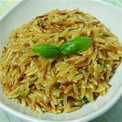

Parmesan Garlic Orzo

Description
A quick and simple recipe that hits the spot. You can't go wrong with this creamy, cheesy pasta dish
Excellent on its own or as a side dish. Easily scalable to suit your number of guests!
Ingredients
- 2 Tbsp butter
- 1 cup uncooked orzo
- 400mL chicken broth
- 1/2 cup grated parmesan cheese
- 1/4 cup chopped fresh basil
- salt and pepper to taste
- fresh basil leaves to taste
Steps
- Melt butter in heavy skillet over medium-high heat.
- Stir in orzo and saute until lightly browned.
- Stir in chicken broth and bring to boil. Cover, reduce heat and simmer until orzo is tender and liquid is absorbed (about 15-20 minutes).
- Mix in parmesan cheese and chopped basil. Season with salt and pepper.
- Plate and garnish with basil leaves.